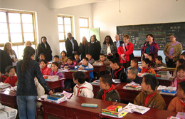
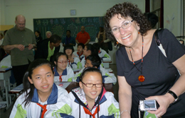

About Us
The chief members of USCEC are a group of Chinese-American educators and professionals who have lived and taught at different levels first in China and then in the U.S. for many years, and thus are familiar with culture and education in both countries.
In addition, many educators in the U.S. and China also serve as council advisors.
Although our main office is in northern New Jersey, the service we provide is not limited to the Greater New York area. Colleagues from different states in the U.S. and from Canada have benefited from our programs.
We have good working relationships with China's Ministry of Education, the Confucius Institute, educational departments, schools and universities in all major Chinese provinces and cities, China International Travel Service (CITS), and the Consulate General of the P. R. China in New York.
We have not found it necessary to apply for the BBB accreditation, for two reasons: First, not all good businesses are BBB-accredited. Second, we have been providing high-quality service since 2002 of promoting cultural and educational exchanges between the two countries, and have built our reputation with past participants of our programs. We are confident in what we do and have trust from our clients.
Specifically, we offer the following service and programs to educators, students, scholars and other professionals:
- Educational tours from the U.S. to China, and from China to the U.S.
- Study abroad programs and summer camps in China.
- Teacher exchange programs.